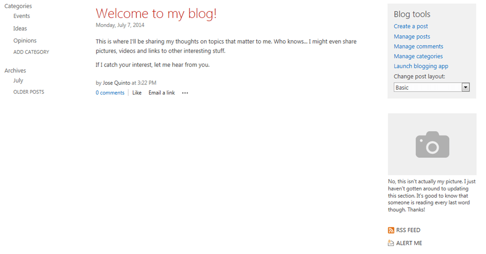
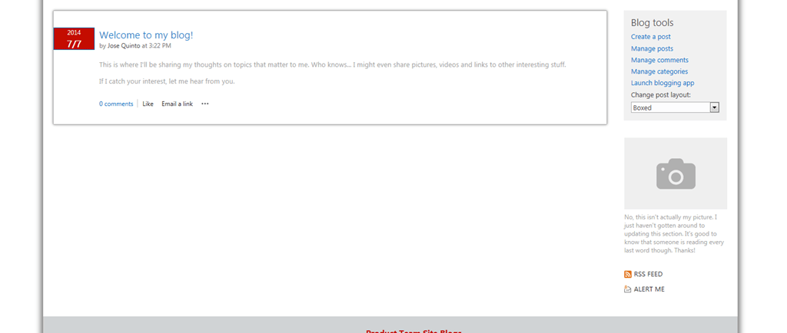

Introduction
First of all, SharePoint Blog Template in SharePoint 2013 have been improved, but Microsoft should do more effort in this side.
The requirement is to have several Blog sites behind a Publishing site called Blogs and the most important, the need to be integrated in the Corporate Design (centered content, blah blah).
Options
So my options are:
Leave Blogs site by default

In my case isn’t possible due to business requirement is remove left lateral panel. So the main content is divided in two, Left Area (Blog content), Right Area (Archive, Blog Tools, Picture, Top 10 Tags, Top Authors, and so on…).
Modify default layout by Change Custom Master Page and create content behind “Pages”.
To implement this idea I need to:
1- Enable Publishing Features 2- Create new home Page behind Pages library in order to be able to get styles from Custom Master page instead System Master Page. 3- Create one Posts.aspx page that represent one post article
That idea could be a solution but…
Pros
Easy to create Home.aspx and add Blog Tools, Posts app with Summary view Style changes directly managed with
Custom Master PageinsteadSystem Master PageCons
We can’t emulate Post Items links to redirect to another
Posts.aspxpage behindPages/Posts.aspx. That is really hard to implement.
Modify default layout by Change System Master Page and maintain content behind default.aspx and Lists/Post.aspx files
To implement this idea I need to:
1- Enable Publishing Features 2- Change System Master Page to new one 3- Edit new master page and css to adapt to my business needs.
In my scenario that is the best solution, but…
Pros
Easy to deal with master page changes, because it is dedicated master page
Cons
We loose System Master Page default in system pages like
settings.aspx,/_layouts/15/viewlsts.aspx, … If we need to remove left panel, we should loose this panel in the system pages too
Final aspect
This is the final aspect: 
Important notes
- Should I reuse my current master page or create new one?
It Depends, If in our current master page we have loaded several js, css, … that we don’t need for Blog sites, make sense to create a new one.
Read more…